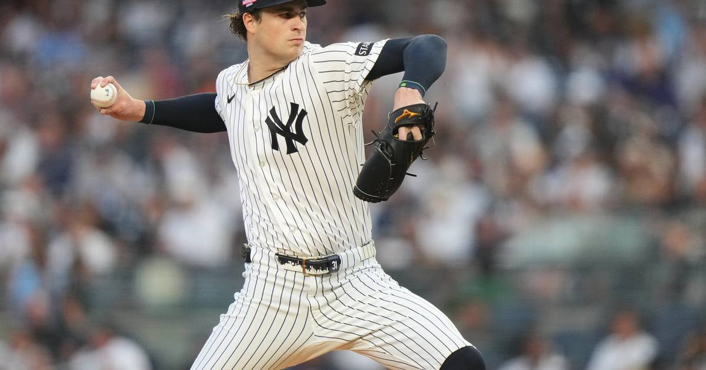

Schlittler and Misiorowski win Cy Young Awards unanimously — youngest duo in 41 years
Cam Schlittler and Jacob Misiorowski both swept all 30 first-place votes, the youngest Cy Young-winning pair since 1985 — and Misiorowski adds the award to a World Series title in the same season.

Disclosure: this post contains affiliate links. I earn a commission on qualifying purchases.
The announcement
The BBWAA announced the 2026 Cy Young Award winners on Wednesday night, and the vote wasn't close in either league. Yankees right-hander Cam Schlittler took the American League honor and Brewers ace Jacob Misiorowski took the National League honor — both unanimously, with all 30 first-place votes and 210 points apiece.
It's only the third time in history that both Cy Young winners were unanimous in the same year, after 1968 and 2022.
Cam Schlittler, AL Cy Young
Schlittler put together the best pitching season in the American League: 14-6 with a 1.95 ERA, 239 strikeouts and a 0.92 WHIP over 193.2 innings. His ERA led the AL, and his 7.0 WAR and 215 ERA+ led AL starters too.
He's the 13th unanimous AL Cy Young winner, and the seventh Yankee to win the award — the first since Gerrit Cole in 2023. Dylan Cease finished second with 110 points and Parker Messick third with 84.
Jacob Misiorowski, NL Cy Young
Misiorowski was just as dominant on the other side: 16-5 with a 1.80 ERA — the best in the majors — plus 252 strikeouts and a 0.80 WHIP over 174.2 innings, with a 6.4 WAR across 30 starts.
He's the fourth Brewer ever to win the Cy Young, joining Rollie Fingers (1981), Pete Vukovich (1982) and Corbin Burnes (2021). Cristopher Sánchez finished second with 99 points, one ahead of Chris Sale's 98.
The history
The two winners are 24 and 25 — the youngest Cy Young-winning duo since 1985, when 20-year-old Dwight Gooden and 21-year-old Bret Saberhagen swept the awards.
Both are second-year arms in their first full seasons after midseason call-ups in 2025, and Misiorowski did it with the loudest stuff in the game: he threw 28 of the 35 hardest pitches in the majors this season, ranging from 104 to 105.5 mph.
Misiorowski also joins Randy Johnson (2001) and Justin Verlander (2022) as the only pitchers since 2000 to win the Cy Young and the World Series in the same year, after helping the Brewers to their first title.
Also tonight
Mason Miller was unanimously chosen as the National League Reliever of the Year, and Louis Varland took the American League honor.
What's next
Awards week ends Thursday night with the MVPs. Pete Crow-Armstrong is the favorite in the National League and Yordan Alvarez in the American League — but the winners aren't official until the announcement.
Sources
• Youngest pair of Cy Young winners in 41 years — USA Today
• Brewers' Jacob Misiorowski, Yankees' Cam Schlittler win Cy Young Awards — NBC Sports
• Jacob Misiorowski wins NL Cy Young Award — MLB Trade Rumors
• Jacob Misiorowski wins unanimous NL Cy Young Award; Cam Schlittler claims AL honors — Brew Crew Ball
• MLB Awards 2026: Full List of Winners — Sports Illustrated
Gear up: Fanatics